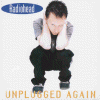

Unplugged Again

Silver Wolf - HOWL 22 tracks 1-15 acoustic
Tracks 1-8 performed by Thom and Jonny. Date and show unknown
<1> You
<2> Lucky
<3> Subterranean Homesick Alien
<4> Fake Plastic Trees
<5> Street Spirit
<6> Bulletproof
<7> Stop Whispering
<8> Faithless the Wonder Boy
Tracks 9-15 performed by Thom and Jonny. Date and show unknown
<9> Ripcord
<10> Pop is Dead
<11> Vegetable
<12> The Bends
<13> How Can You Be Sure?
<14> Nice Dream
<15> Stupid Car
Tracks 16-19 recorded for BBC Radio One 28/May/97
<16> No Surprises
<17> Paranoid Android
<18> Exit Music [For a Film]
<19> Talk Show Host
Type of recording : Varied Radio Broadcasts
Quality : Okay
Notes : Quality of tracks 1-8 okay, tracks 9-15 have bad tape hiss, and tracks 16-19 are
of poor quality too. The versions of the songs, however, are really good.
Rating : ***